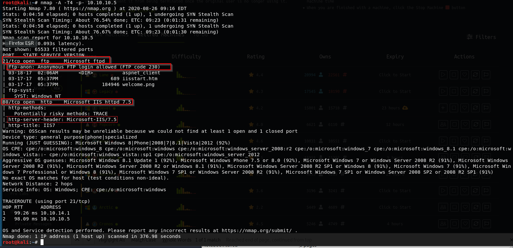

we're going to see common port combination something along the lines of port 21 and port 80 you see that a lot where you have a website and you have port 21 or you might have port 22 and port 80.
!!And you have to leverage and exploit somewhere in order to get somewhere else.
!How can we leverage FTP if we have anonymous access and howcan we enumerate what is in front of us.

on an assesment http-server-header: Microsoft-IIS/7.5 and http-title are a very low finding but still this is a finding and information for attacker.
!!heath adams "just from experience that we're probably looking at a default web page if the title is going to be IIS7"
There is ftp anonymous login and there are files in it. They look like a web root directory (look at iisstart.htm)
!!!!Another finding is anonymous ftp login. why we are allowing login anonymous people.
First thing first if there is a web page so why we don't go the web page may be we'll find useful information.

during pentesting we come across these default web pages a lot. Now this signifies one of two things;
1)they have a web site out in the open and they have it running on the backend somewhere at a different directory.
!! there is probably a directory to this web page they're running and it may resolve to a domain name.
Let's just say Google it may be like dev.google.com is where they're running on this web server But when you just navigate to port 80 or port 443 the default web page is still here
!!!this is a finding on a pentest as well, this signifies that there is poor hygiene.
!!heath "So my first thought in this instance is i'm going to look for extra directories and my favorite tool for that is called dirbuster.
Another tools for directory busting : gobuster , dirb.

we're against windows machine as target machine so instead of searching php files we search asm,asmx,asp,aspx files. If that is apache server then we can search for php files.

we can add more file types for more informartion but as we write more file type, this is gonna take more time.
This is for the sake of seeing actual methodology but we won't do this. Instead we'll look at ftp.
So let's look at whether we can put file to ftp and whether we can execute and reach out from browser.

okay this is source code of the page and as we can see there is a file which is in ftp server and at the same time this file is being used in the page. And we deduce that maybe we can put file into the ftp and we can execute them. Let's try that.

we can connect just like that. And as you can see commands are like linux commands.


!!!!We must enter "anonymous" to username and password field when is being said "Anonymous login allowed" they literally mean it.
!!!!when we want to put file into the ftp server we must be in the same directory with the file. In that case i saved in Desktop directory.

now we can see the file. Let's look whether we can reach out that file or not.

this seems like disrupting but eventually we can reach out and execute the file where in ftp server. So why we don't put some malicious file and execute it? We're going to do that right now.
Now we can use a tool called MSFVENOM for that purpose.
And we can look at cheatsheet about that tool.


(https://netsec.ws/?p=331)
we're looking for ASP.

Because we know that they run asp, aspx as an IIS server.
We're going to generate a payload with that.
This payload will say to target machine "hey use me and connect at my listening host(we) and my listening port (LPORT) <this is a reverse shell btw>

left of the less-than sign creates shellcode and on the right of that sign we write that into the ex.aspx file.

this is putted to desktop(where we are.)
So how to we use that?


this is just a listener.


so if you va issue related to execute or load the payload into ftp you can try to switch binary from ASCII mode.
So now we have a listener going and we putted the file into ftp now we can execute trying to go to 10.10.10.5/ex.aspx lets try this.

so when we enter that address we gained shell but we're not authority in system as we can see in server username.
Now in this case there is a tool called getsystem we can try that.

it didn't work okay.
!!In a rare occasion that actually can crash a machine if you're doing on a pentest be very careful.
There are post modules in meterpreter.

so all i need is a session running and then this'll do some enumeration for us. This is post exploitation enumeration.


And what this is going to do is this is going to look through all the x86 exploits that it knows of that our privilege escalation exploits it's going to compare what's going on in the Windows system and say hey yeah That might be good for this or no that's not going to work.
Let's use second kitrap0d is pretty friendly.


we launched a process but we did not get a reverse shell back But now there are payload options in options.
Because look at the lhost it tend to be our ethernet interface. You could just say set lhosts bla bla without seeing the options screen if you know this issue.

lport must be same with the listener port (multi/handler)
we can list all payloads with msfvenom -l payloads that
let's try without metasploit.

we're doing these operations in order to gain a webshell. From now on we're going to reach out that file via browser.

great! now we've a webshell. . Let’s run a quick ping test to make sure we’re able to communicate from this system to ours.

(https://infinitelogins.com/2020/01/20/hack-the-box-write-up-devel-without-metasploit/)
If you have a Unix or Unix-like (Linux, Mac OS) operating system, you can usetcpdumpto examine network traffic. The tcpdump program is a command line utility that can be installed for free.

we've connection between our box and webserver.
The output confirms that our box received a ping request from the webserver — great! So we have command execution and can communicate to/from the box, but how do we turn this into an interactive reverse shell?
Turning Command Execution to Reverse Shell


let's get some information in order to gain full authority on the system.
https://medium.com/devel-htb-walkthrough/devel-htb-walkthrough-fd2fc174490